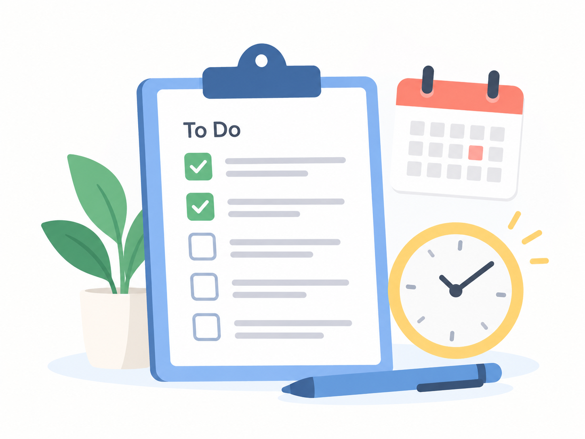

서비스 소개
하루를 계획하는 방법을 알아보세요

FocusDay는 하루의 할 일과 일정을 계획하고 정리하는 방법을 소개하는 서비스입니다.
계획 제목과 작성 시간을 정하고 하루 점검 질문을 선택하는 과정을 연습할 수 있습니다.
주요 기능
하루 계획 세우기
하루 동안 해야 할 일을 정리하고 우선순위를 정하는 방법을 알아볼 수 있습니다.
일정 관리 연습
시간대별로 일정을 배치하고 효율적으로 시간을 관리하는 방법을 알아볼 수 있습니다.
하루 계획 확인
계획한 일정을 점검하고 하루를 체계적으로 정리하는 방법을 확인할 수 있습니다.
사용 방법
- 주요 기능을 살펴보고 FocusDay 이용 준비에서 안내를 확인합니다.
- 하루 계획 제목을 입력하고 계획 작성 시간과 점검 질문을 선택합니다.
- 설정 내용을 확인한 뒤 완료하거나 이전 단계에서 수정합니다.
FocusDay 이용 준비
닉네임 설정
0/10
설정 안내 확인
안내 사항을 확인해 주세요.
하루 계획 설정
1. 계획 입력 2. 조건 선택 3. 내용 확인
오늘의 계획 제목을 입력해 주세요.
계획 방식을 선택해 주세요.
설정한 내용을 확인해 주세요.
계획 제목
계획의 상세 정도
하루 점검 질문
하루 계획 설정 연습이 완료되었습니다.
설정한 내용을 확인했습니다. 필요하면 다시 설정할 수 있습니다.
알림 받기
이메일을 입력한 뒤 신청해주세요